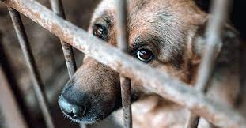
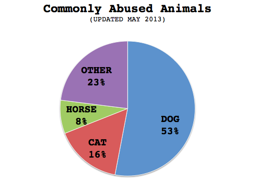
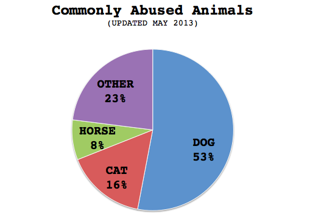

Animal Abuse


Home
What is Animal Abuse?
Cruelty to Animals, also called Animal Abuse is iflecting harm, injuring or killing the Animal. The cruelty can be intentional, such as kicking, burning, stabbing, beating or shooting. Useage of Ainmals for Genectic Purposes is also Animal Abuse. Dogs are the most common victims of this cruelty.
 


Please donate to any Animal Shelter in your area
FAQ
What is animal cruelty?
Animal cruelty encompasses a range of behaviors harmful to animals, from neglect to malicious killing. Most cruelty investigated by humane officers is unintentional neglect that can be resolved through education. Intentional cruelty can run the gamut from knowingly depriving an animal of food, water, shelter, socialization or veterinary care to maliciously torturing, maiming, mutilating or killing an animal.
Why is it a concern?
All animal cruelty is a concern because it is wrong to inflict suffering on any living creature. Intentional cruelty is a particular concern because it is a sign of psychological distress and often indicates that an individual either has already been a victim of violence or might be predisposed to committing acts of violence.
Why would anyone be cruel to animals?
There can be many reasons. Animal cruelty, like any other form of violence, is often committed by a person who feels powerless, unnoticed or under the control of others. The motive may be to shock, threaten, intimidate or offend others or to demonstrate rejection of society's rules. Some who are cruel to animals copy acts they have seen or that have been done to them. Others see harming an animal as a safe way to get revenge against—or threaten—someone who cares about that animal.
Is there any evidence of a connection between animal cruelty and human violence?
Absolutely. Many studies in psychology, sociology and criminology in the past 25 years have demonstrated that violent offenders frequently have childhood and adolescent histories of serious and repeated animal cruelty. The FBI has recognized the connection since the 1970s, when its analysis of the lives of serial killers suggested that most had killed or tortured animals as children.
For more Information check thisWhat happens when authorities prosecute an animal cruelty case?
Depending on the severity of the case, those convicted of animal cruelty can be imprisoned. Appropriate sentencing can also include individual or family counseling, community service, placement in a diversion program and a prohibition on owning or caring for animals. It is rarely the goal of police to imprison a child for cruelty to animals. Law enforcement officers and judges recognize that cruelty to animals is one part of a complex problem. Sometimes, the official response to animal cruelty provides a family its first opportunity to get help.
Can reports be made anonymously?
While many jurisdictions will respond to an anonymous complaint, successful prosecutions often depend on an identifiable witness who can authenticate evidence.
How many animals are victims of cruelty each year?
Because there is no national reporting requirement for animal abuse, there is no way to track the number of animal cruelty cases that are filed or that make it to court each year. The idea of creating animal abuser registries, similar to sex abuser registries, has been advocated for a long time. The nation's first such registry was established in Suffolk County, N.Y., in October 2010.
What can I do to help fight animal cruelty?
Be aware of the signs of animal cruelty and know how to report suspected cruelty to animals and sign up to be notified about actions you can take to bring animal abusers to justice.
What is criminal animal neglect?
Animal neglect situations are those in which the animal's caretaker or owner fails to provide food, water, shelter or veterinary care sufficient for survival. It can be either deliberate or unintentional, but either way, the animal suffers terribly. Extended periods of neglect can lead to seriously compromised health or even death. Animal cause control agencies nationwide report that animal neglect cases are the most common calls to which they respond.
How does it cause animal suffering?
The pain of an animal who lingers with untreated illness or wounds, or without nourishment or shelter, can be tremendous—sometimes even more so than those who are victims of directly inflicted violence, because their suffering is so prolonged. Animals who starve to death experience a myriad of painful symptoms throughout each stage of their physical deterioration. An initial loss of body fat is followed by muscle loss and atrophy and, ultimately, organ failure. In long-term starvation, degeneration of the liver, cardiac changes, anemia and skin lesions may develop. An animal without proper shelter can also quickly succumb to extreme heat or cold. During extremely cold spells or hot periods, it is not uncommon for animal control officers to find companion animals—often chained dogs—literally frozen to the ground or dead from heat prostration because of lack of proper shelter from the elements. Often these animals perish only feet away from the homes in which their caretakers live. Dogs who are continually chained are also neglect victims, even if it may not be illegal in that particular jurisdiction. Because dogs are social pack animals, isolating them at the end of a chain causes them anguish that can drive them to aggression, neuroses and self-mutilation behaviors. Chained dogs are also more likely to be victims of starvation, because their confinement renders them particularly helpless.
Are there other concerns?
Yes. Law enforcement officials responding to cases of animal neglect often find various forms of abusive behavior [PDF] like child neglect and/or elder abuse in the same household. This is particularly true in cases of animal hoarding, where a person takes in far too many animals than can be cared for and becomes virtually blind to their suffering. Cats are the most common animal-hoarding victims. Because people who are insensitive to the suffering of animals are more likely to be unresponsive to the needs of dependent people in their household (and vice versa), several states have "cross-reporting" laws. Cross-reporting laws are those in which humane officers and/or veterinarians are required to report possible elder and/or child abuse. Also, there can be informal agreements between social welfare agencies where agents are encouraged to report suspected animal cruelty and neglect. Anecdotally, in cases of severe animal neglect at a residence, mental illness and/or drug abuse may be implicated in the situation as well.
Are there laws against animal neglect?
Yes. Although many people do not recognize animal neglect as illegal animal abuse, many states have a provision specifically addressing animal neglect written into their animal cruelty laws; others allow animal neglect to be prosecuted under the general cruelty statute prohibiting acts of "torture" against an animal. Thirteen states have laws limiting the continuous chaining of dogs. Body condition scoring systems for cattle and horses have long been in place to help assess the condition of livestock, and in recent years scoring systems for dogs (ranging from ideal to emaciated) have been developed to help animal cruelty investigators and veterinarians assess cases of animal neglect. A major shortcoming of many animal neglect laws is their failure to address all animal species. For instance, many statutes specifically apply only to dogs and cats or "companion animals" and exclude those considered "farm animals" or trapped wildlife.
Can animal neglect be prosecuted as a felony offense?
Prosecutors in some states have the option to charge an egregious case of animal neglect as a felony when the neglect was considered to have fallen under the definition of "torture," or was considered intentional (although intent has been notoriously difficult to prove in court). Still, felony convictions have been obtained in neglect cases resulting in the animals' deaths. There are several compelling reasons for treating animal neglect as a serious crime, including the extreme suffering involved and its implications for the welfare of other animals and people who may rely upon the abuser. Overly lenient penalties (small fines, probation or suspended sentences) that accompany misdemeanor convictions are problematic because they leave the door open for the offenders to repeat their abuse with other animals and/or people in their care.
What can I do to help stop animal neglect?
Be aware of the signs of animal neglect—including chained dogs, animal hoarding, or abandoned pets—and be willing to make a report to your local animal control agency. If your town or city does not have a local animal control, you can make a report to the sheriff or other law enforcement agency. (You may remain anonymous when filing a report.) Some neglect cases, when the owners' lack of resources and/or knowledge is the problem, can be resolved simply by educating the owner and working with them to adjust their animal's living conditions. For example, some communities have fence-building projects for the owners of chained dogs who may not have enough money to build a fence. (This approach is usually more effective if you're well acquainted with or are on positive terms already with the person in question.) In most cases, the education and monitoring of the neglect situation is best left to your community's law enforcement professionals.